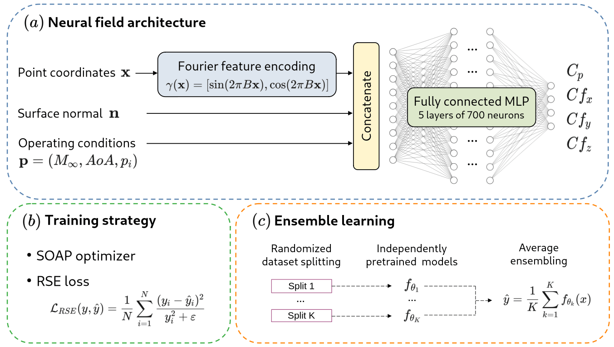
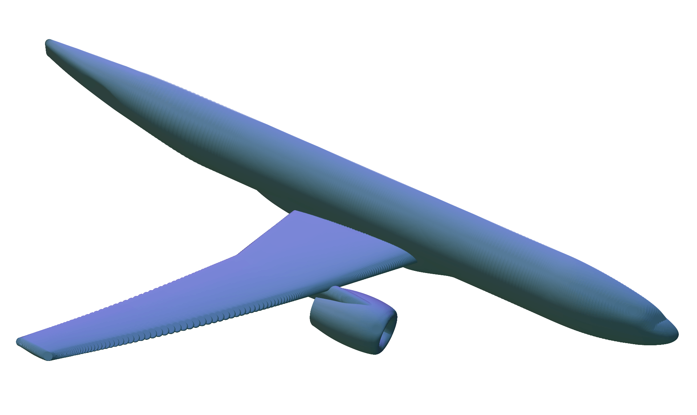
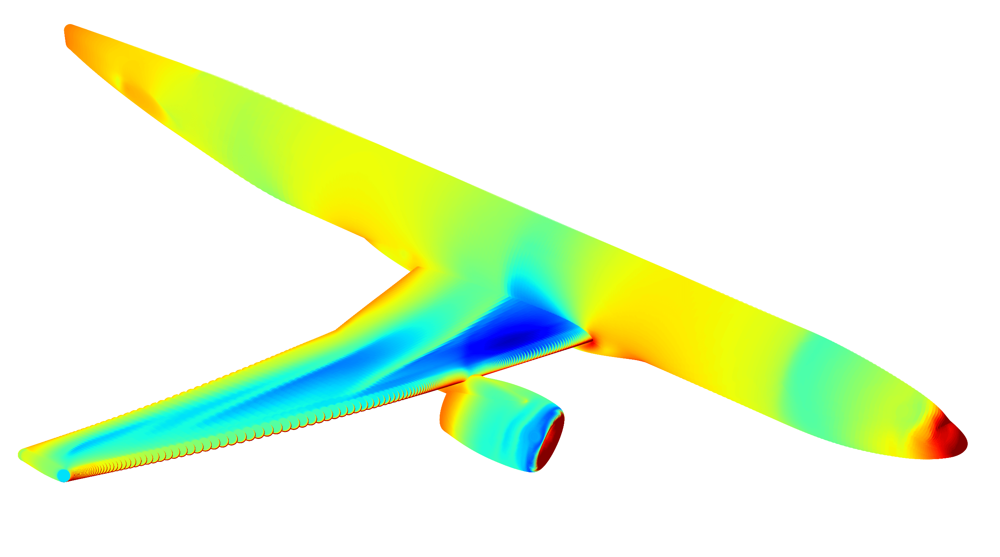
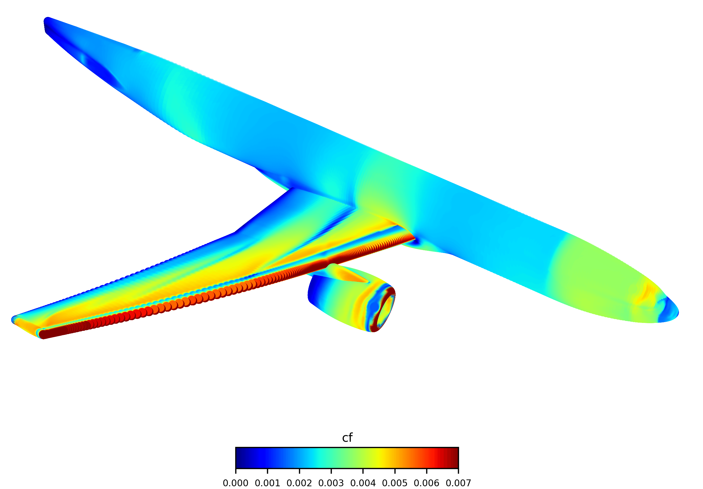
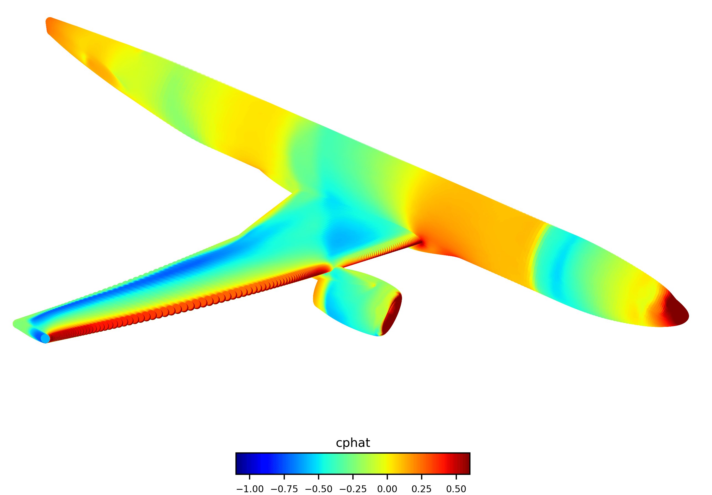
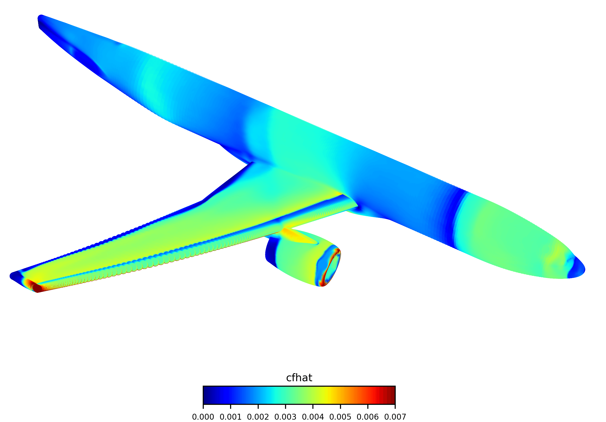

First-Place Solution
A coordinate-based conditional neural field predicts aerodynamic surface quantities directly from geometry and flow conditions, without requiring CFD mesh connectivity.
8.81
Final competition score
8.64
Strongest organizer-provided baseline
~230×
Fewer trainable parameters
On the hidden competition test set, the proposed methodology achieves a score of 8.81, compared with 8.64 for the strongest organizer-provided baseline, while using approximately three orders of magnitude fewer trainable parameters.

The Challenge

Complex 3D Geometry
Wing-body-pylon-nacelle aircraft configuration.

Complex Flow
Multiple aerodynamic regimes, localized flow phenomena (shocks, separation)
312
CFD simulations for training
260,774
surface points
No
mesh connectivity is available.
Proposed Methodology
We formulate the problem as a conditional neural field. A fully connected neural network predicts the four aerodynamic quantities from the surface coordinates, normal vector, and operating conditions (Mach number, angle of attack, and stagnation pressure).
Mesh-independent representation
Because the CFD mesh is unavailable, the model operates directly on the point-wise representation of the aircraft surface. No mesh connectivity or manually constructed surface parameterization is required.
Fourier feature encoding
Standard MLPs tend to learn low-frequency components preferentially. To improve the representation of localized flow structures, the Cartesian coordinates are transformed using Fourier feature encoding before being provided to the neural network.
Metric-aligned training
The challenge score combines global accuracy with a worst-case relative error. We therefore replace the conventional mean squared error with a relative squared error objective, encouraging the model to reduce relative prediction errors across the different flow configurations.
Ensemble learning
Multiple neural fields are trained independently and their predictions are averaged. This reduces the variance associated with individual models and improves robustness, particularly for difficult configurations.
K-fold cross-validation
Finally, the available 312 simulations are partitioned into five folds. Models trained on the different folds are combined into the final ensemble, allowing every available simulation to contribute to model training while increasing ensemble diversity.
Progressive Development
The final solution was obtained through a progressive development process. Starting from a simple neural field, we successively introduced Fourier features, increased model capacity, adopted a relative squared error loss, and finally incorporated ensemble learning and k-fold cross-validation.

Results
The final ensemble achieved a score of 8.81 on the hidden competition test set, compared with 8.64 for the strongest organizer-provided baseline, the Global MLP. The neural-field solution uses approximately three orders of magnitude fewer trainable parameters.

Qualitative Results







Abstract
Machine-learning surrogate models offer a promising alternative to high-fidelity Computational Fluid Dynamics (CFD) simulations for aerodynamic analysis and design. However, constructing accurate surrogates for realistic aircraft configurations remain challenging due to complex geometries, multiple flow regimes, and limited training data. This work presents the methodology that achieved first place in the ONERA CRM Wall Distribution Regression Challenge, which focuses on predicting pressure and skin-friction coefficient distributions over the NASA Common Research Model wing-body-pylon-nacelle configuration under different operating conditions. The proposed approach formulates the problem as a conditional neural field mapping spatial coordinates, surface normals, and operating conditions to aerodynamic wall quantities. Fourier feature encoding, a relative squared error objective aligned with the challenge metric, ensemble learning, and k-fold cross-validation are progressively introduced to improve prediction accuracy and exploit the limited training data. Beyond presenting the final methodology, the paper documents the successive model design choices that led to the winning solution through a comprehensive ablation study and discusses several alternative approaches that were investigated but ultimately discarded. On the hidden competition test set, the proposed methodology achieves an overall score of 8.81, outperforming the strongest organizer-provided baseline, which achieved a score of 8.64, while requiring approximately three orders of magnitude fewer trainable parameters. These results illustrate that carefully designed coordinate-based neural fields constitute an efficient and robust framework for aerodynamic surrogate modeling on complex geometries under limited-data conditions.
Acknowledgments
This work is supported by the "ARIAC by DigitalWallonia4.ai" research project (grant agreement No 2010235 – TRAIL institute) and benefited from computational resources made available on Lucia, the Tier-1 supercomputer of the Walloon Region, infrastructure funded by the Walloon Region (grant agreement No 1910247).
BibTeX
@article{salesses2026neural,
title={Neural Field Ensembles for Aerodynamic Surface Prediction: Winning Solution to the ONERA CRM Wall Distribution 2025 Challenge},
author={Lionel Salesses and Caroline Sainvitu and Tariq Benamara},
year={2026},
eprint={2609.17160},
archivePrefix={arXiv},
primaryClass={cs.LG},
journal={arXiv preprint arXiv:2609.17160},
url={https://arxiv.org/abs/2609.17160},
}